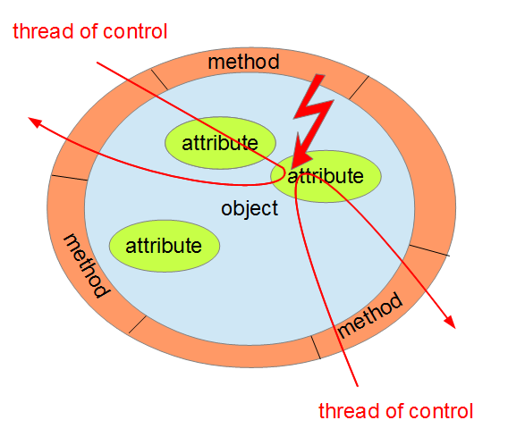

eTrice provides an implementation of the ROOM modeling language (Real Time Object Oriented Modeling) together with editors, code generators for Java, C++ and C code and exemplary target middleware.
The model is defined in textual form (Xtext) with graphical editors (Graphiti) for the structural and behavioral (i.e. state machine) parts.
eTrice is all about the reduction of complexity:
This chapter will give a rough overview of what ROOM (Real-time Object-Oriented Modeling) is and what it is good for. It will try to answer the following questions:
Where does it come from?
Which kind of SW-Systems will be addressed?
What is the relation between object oriented programming and ROOM?
What are the benefits of ROOM?
Which consequences must be taken into account?
ROOM was developed in the 1990th on the background of the upcoming mobile applications with the goal to manage the complexity of such huge SW-Systems. From the very beginning ROOM has focused on a certain type of SW-Systems and is, in contrast to the UML, well suited for this kind of systems. In this sense, ROOM is a DSL (Domain Specific Language) for distributed, event driven, real time systems.
Bran Selic, Garth Gullekson and Paul T. Ward have published the concepts 1994 in the book Real-Time Object-Oriented Modeling. The company ObjecTime™ developed a ROOM tool which was taken over by Rational SW™ and later on by IBM™. The company Protos Software GmbH™ also developed a ROOM tool called Trice™ for control software for production machines and automotive systems. Trice™ is the predecessor of eTrice (see Introduction to eTrice).
From our point of view ROOM provides still the clearest, simplest, most complete and best suited modeling concepts for the real time domain. All later proposals like the UML do not fit as well to this kind of problems.
As mentioned before ROOM addresses distributed, event driven, real time systems. But what is a real time system? ROOM defines a set of properties which are typical for a real time system. These properties are:
Timeliness
Dynamic internal structure
Reactiveness
Concurrency
Distribution
Reliability
Each of these properties has potential to make SW development complex. If a given system can be characterized with a combination of or all of these properties, ROOM might be applied to such a system.
As an example take a look at a washing machine. The system has to react to user interactions, has to handle some error conditions like a closed water tap or a defective lye pump. It has to react simultaneously to all these inputs. It has to close the water valve within a certain time to avoid flooding the basement. So, the system can be characterized as timely, concurrent and reactive. As long as the washing machine does not transform to a laundry drier by itself, the system has no dynamic internal structure and as long as all functions are running on a single micro controller the (SW)-system is not distributed. ROOM fits perfect to such a system.
A SW system which mainly consists of data transformations like signal/image processing or a loop controller (e.g. a PID controller) cannot be characterized with any of the above mentioned properties. However, in the real world most of the SW systems will be a combination of both. ROOM can be combined with such systems, so that for example an actor provides a run to completion context for calculating an image processing algorithm or a PID controller.
The relation between classical object oriented programming and ROOM is comparable to the relation between assembler programming and C programming. It provides a shift of the object paradigm. The classical object paradigm provides some kind of information hiding. Attributes can be accessed via access methods. Logical higher level methods provide the requested behavior to the user.
But as the figure illustrates, the classical object paradigm does not care about concurrency issues. The threads of control will be provided by the underlying operating system and the user is responsible to avoid access violations by using those operating system mechanisms directly (semaphore, mutex).

ROOM provides the concept of a logical machine (called actor) with its own thread of control. It provides some kind of cooperative communication infrastructure with run to completion semantics. That makes developing of business logic easy and safe (see Basic Concepts). The logical machine provides an encapsulation shell including concurrency issues (see Run to completion).
This concept of an object is much more general than the classic one.
ROOM has a lot of benefits and it depends on the user’s point of view which is the most important one. From a general point of view the most important benefit is, that ROOM allows to create SW systems very efficient, robust and safe due to the fact that it provides some abstract, high level modeling concepts combined with code generation and a small efficient runtime environment.
In detail:
ROOM models contain well defined interfaces (protocols), which makes it easy to re-use components in different applications or e.g. in a test harness.
Graphical modeling makes it easy to understand, maintain and share code with other developers
Higher abstraction in combination with automated code generation provides very efficient mechanisms to the developer.
ROOM provides graphical model execution, which makes it easy to understand the application or find defects in a very early phase.
Generating code from models will introduce some overhead in terms of memory footprint as well as performance. For most systems the overhead will be negligible. However, the decision for using ROOM should be made explicitly and it is always a trade off between development costs, time to market and costs in terms of a little bit more of memory and performance. Thanks to the powerful component model, ROOM is especially well suited for the development of software product lines with their need for reusable core assets.
Care must be taken during the introduction of the new methodology. Due to the fact that ROOM provides a shift of the object paradigm, developers and teams need a phase of adaption. Every benefit comes at a price.
The basic elements of ROOM are the actors with their ports and protocols. The protocol provides a formal interface description. The port is an interaction point where the actor interacts with its outside world. Each port has exactly one protocol attached. The sum of all ports builds up the complete interface of an actor. Each port can receive messages, with or without data, which are defined in the attached protocol. Each message will be handled by the actor’s behavior (state machine) or will be delegated to the actor’s internal structure.
|
|
Actor with sub actors |
Protocol definition |
The actor provides access protection for its own attributes (including complex types, i.e. classical objects), including concurrency protection. An actor has neither public attributes nor public operations. The only interaction with the outside world takes place via interface ports. This ensures a high degree of re-usability on the actor level and provides an effective and safe programming model to the developer.
Receiving a message via a port will trigger the internal state machine. A transition will be executed depending on the message and the current state. Within this transition, detail level code will be executed and response messages can be sent.
With this model, a complex behavior can be divided into many relatively simple, linked actors. To put it the other way round: The complex behavior will be provided by a network of relatively simple components which are communicating with each other via well defined interfaces.
ROOM provides two types of hierarchy. Behavioral hierarchy and structural hierarchy. Structural hierarchy means that actors can be nested to arbitrary depth. Usually you will add more and more details to your application with each nesting level. That means you can focus yourself on any level of abstraction with always the same element, the actor. Structural hierarchy provides a powerful mechanism to divide your problem in smaller pieces, so that you can focus on the level of abstraction you want to work on.
The actor’s behavior will be described with a state machine. A state in turn may contain sub states. This is another possibility to focus on an abstraction level. Take the simple FSM from the blinky actor from the blinky tutorial.
Top level:

blinking Sub machine:

From an abstract point of view there is a state blinking. But a simple LED is not able to blink autonomously. Therefore you have to add more details to your model to make a LED blinking, but for the current work it is not of interest how the blinking is realized. This will be done in the next lower level of the hierarchy.
This simple example might give an idea how powerful this mechanisms is.
The hierarchical FSM provides a rich tool box to describe real world problems (see Room Concepts).
Layering is another well known form of abstraction to reduce complexity in the structure of systems. ROOM is probably the only language that supports layering directly as a language feature. Layering can be expressed in ROOM by actors with specialized ports, called Service Access Points (SAP) and Service Provision Points (SPP).
The actor that provides a service implements an SPP and the client of that service implements an SAP. The layer connection connects all SAPs of a specific protocol within an actor hierarchy with an SPP that implements the service. From the actor’s point of view, SAPs and SPPs behave almost like ports.

The example shows a layered model. The layer connections define e.g. that the ApplicationLayer uses the services of the ServiceLayer and the CommunicationLayer. Actors inside the ApplicationLayer that use an SAP for those services are connected directly to the implementation of the services. Layering and actor hierarchies with port to port connections can be mixed on every level of granularity.
Run to completion (RTC) is a very central concept of ROOM. It enables the developer to concentrate on the functional aspects of the system. The developer doesn’t have to care about concurrency issues all the time. This job is concentrated to the system designer in a very flexible way. What does run to completion mean: RTC means that an actor, which is processing a message, can not receive the next message as long as the processing of the current message has been finished. Receiving of the next message will be queued by the underlying run time system.
Note: It is very important not to confuse run to completion and cooperative multi threading. Run to completion means that an actor will finish the processing of a message before he can receive a new one (regardless of its priority). That does not mean that an actor cannot be preempted from an higher priority thread of control. But even a message from this higher prior thread of control will be queued until the current processing has been finished.
With this mechanism all actor internal attributes and data structures are protected. Due to the fact that multiple actors share one thread of control, all objects are protected which are accessed from one thread of control but multiple actors. This provides the possibility to decompose complex functionality into several actors without the risk to produce access violations or dead locks.
Since from ROOM models executable code can be generated, it is important to define the way the actors are executed and communicate with each other. The combination of communication and execution is called the execution model. Currently the eTrice tooling supports the message driven, the data driven and a mixture of both execution models. In future releases maybe also a synchronous execution model will be supported, depending on the requirements of the community.
message driven – asynchronous, non blocking, no return value:
Usually the message driven communication is implemented with message queues. Message queues are inherently asynchronous and enable a very good decoupling of the communicating parties.
data driven – asynchronous, non blocking, no return value:
In data driven communication sender and receiver often have a shared block of data. The sender writes the data and the receiver polls the data.
function call – synchronous, blocking, return value:
Regular function call as known in most programming languages.
eTrice currently supports the two former communication methods.
execution by receive event: The message queue or the event dispatcher calls a receive event function of the message receiver and thereby executes the processing of the event.
polled execution: The objects are processed by a cyclic execute call
execution by function call: The caller executes the called object via function call
eTrice currently supports the two former execution methods.
In present-day’s embedded systems in most cases one or several of the following execution models are used:
The message driven execution model is a combination of message driven communication and execution by receive event. This model allows for distributed systems with a very high throughput. It can be deterministic but the determinism is hard to proof. This execution model is often found in telecommunication systems and high performance automation control systems.
The data driven execution model is a combination of data driven communication and polled execution. This model is highly deterministic and very robust, but the polling creates a huge performance overhead. The determinism is easy to proof (simple mathematics). The execution model is also compatible with the execution model of control software generated by Tools like Matlab(TM) and LabView(TM). This model is usually used for systems with requirements for safety, such as automotive and avionic systems.
The synchronous execution model could also be called function calls. This model in general is not very well suited to support the run to completion semantics typical for ROOM models, but could also be generated from ROOM models. With this execution model also lower levels of a software system, such as device drivers, could be generated from ROOM models.